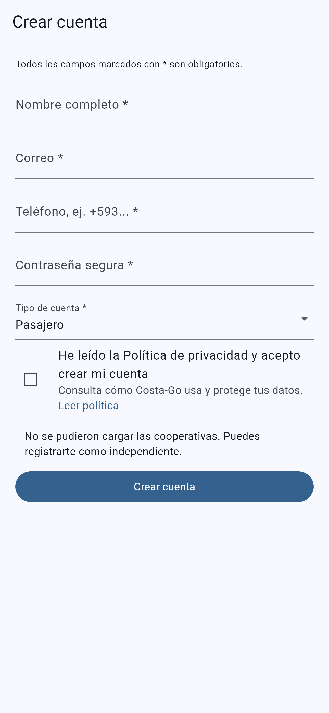
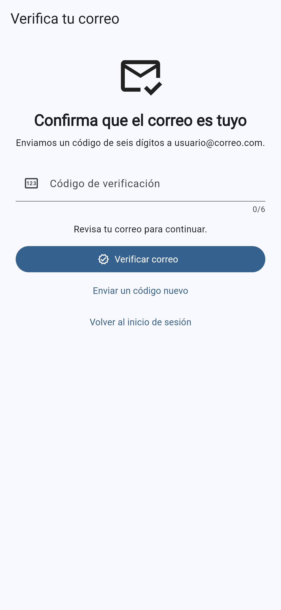
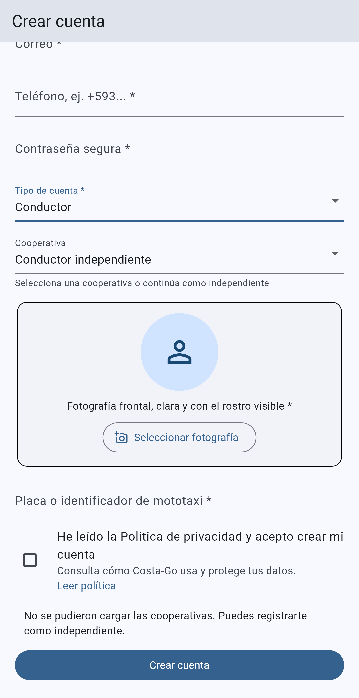

Guía visual paso a paso Versión 1.0 · 14 de agosto de 2026
Tu viaje, nuestra prioridad.
1. Antes de comenzar
Este manual explica cómo crear y verificar una cuenta en Costa-Go. Los campos marcados con * son obligatorios.
Ten disponible:
un correo electrónico personal al que puedas acceder;
un número de teléfono activo;
una contraseña segura;
conexión a Internet.
Si vas a registrarte como conductor, también necesitas una fotografía frontal, la placa o identificador de la mototaxi, documentos habilitantes y el nombre de tu cooperativa si perteneces a una.
2. Reglas de la contraseña
La contraseña debe tener entre 10 y 100 caracteres, incluir mayúscula, minúscula, número y símbolo (por ejemplo !, @ o #) y no contener espacios.
Seguridad: no copies contraseñas de ejemplo ni compartas tu contraseña o código de verificación.
3. Crear una cuenta de pasajero
Abre Costa-Go y pulsa Crear una cuenta.
Escribe tu nombre completo.
Ingresa un correo electrónico válido. Se utilizará para verificar la cuenta y recuperar la contraseña.
Ingresa tu número de teléfono; si corresponde, usa el prefijo de país, por ejemplo +593.
Crea una contraseña que cumpla las reglas indicadas.
En Tipo de cuenta, selecciona Pasajero.
Lee la Política de privacidad y marca la casilla de aceptación.
Pulsa Crear cuenta.

Formulario de creación de cuenta de pasajero.
4. Verificar el correo
Revisa la bandeja de entrada del correo registrado.
Busca el mensaje de Costa-Go. Si no aparece, revisa Spam, Correo no deseado o Promociones.
Escribe en la aplicación el código de seis dígitos y pulsa Verificar correo.
Si el código caducó o no llegó, pulsa Enviar un código nuevo y utiliza el más reciente.

Verificación de identidad mediante correo electrónico.
5. Crear una cuenta de conductor
Completa nombre, correo, teléfono y contraseña segura.
En Tipo de cuenta, selecciona Conductor.
Elige tu cooperativa o selecciona Conductor independiente.
Carga una fotografía frontal, clara y con el rostro visible.
Escribe la placa o identificador de la mototaxi.
Acepta la Política de privacidad y pulsa Crear cuenta.
Verifica el correo con el código de seis dígitos.

Datos adicionales obligatorios para el perfil de conductor.
6. Documentos y aprobación del conductor
Crear la cuenta no habilita inmediatamente al conductor para recibir viajes. Debes cargar:
fotografía del conductor;
documento de identificación;
licencia de conducir;
matrícula de la mototaxi;
permiso de operación.
Para imágenes se admiten JPG, JPEG, PNG y WEBP. El permiso de operación también puede cargarse como PDF, DOC o DOCX, con un máximo de 5 MB.
Estado
Qué significa
Completa tus documentos
Falta uno o más archivos obligatorios.
Documentos enviados para revisión
La información está completa y espera revisión administrativa.
Se requieren correcciones
Revisa la observación y reemplaza el documento solicitado.
Solicitud rechazada
La solicitud no fue aprobada; revisa la explicación recibida.
Aprobado
Ya puedes conectarte como conductor y recibir solicitudes.
Cuenta suspendida
No podrás recibir viajes hasta que administración levante la suspensión.
Importante: solo un conductor aprobado puede ponerse disponible y aceptar viajes.
7. Mensajes frecuentes y solución
El correo o teléfono ya está registrado
Usa Recuperar contraseña si la cuenta es tuya. Un usuario puede tener perfiles de pasajero y conductor en una misma cuenta cuando complete la habilitación correspondiente; no debe crear cuentas duplicadas.
La contraseña es rechazada
Comprueba longitud, mayúsculas, minúsculas, número, símbolo y ausencia de espacios.
No llega el código de verificación
Confirma que el correo esté bien escrito, revisa Spam y solicita un código nuevo.
El conductor no puede recibir viajes
Revisa el estado de habilitación. Puede faltar documentación, existir una observación o estar pendiente la aprobación.
La foto o documento no carga
Verifica el formato, el tamaño y la conexión. La fotografía debe ser clara y permitir identificar el rostro.
8. Seguridad y privacidad
No compartas contraseñas ni códigos recibidos por correo.
Si olvidas la contraseña, usa Recuperar contraseña desde el inicio de sesión.
Abre Mi cuenta → Ayuda y soporte para consultar preguntas frecuentes o crear una solicitud. Indica el correo, el perfil y el mensaje mostrado. Puedes adjuntar una captura, pero nunca expongas contraseñas ni códigos.